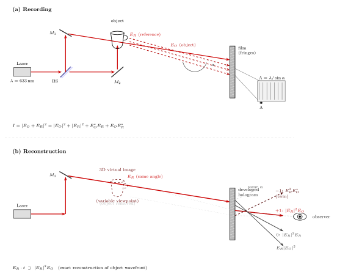

全息图为什么能存储 3D 信息?
上一节讨论了 LiDAR 如何用光的飞行时间去扫出一幅三维点云. 那是一种"主动发问、逐点测距"的办法, 它的 3D 感其实是算出来的. 今天这一节换一个思路——有没有一种记录方式, 能够让一张平面介质自己就带着 3D 信息, 让观察者不需要算、不需要重建算法, 直接用眼睛看就能看见一个悬浮在介质背后的物体? 这就是全息图.
全息 (hologram) 这个词来自希腊语"holos" (全部) 加"gramma" (所写), 字面意思是"把光的全部信息写下来". 所谓"全部", 指的正是普通照片丢掉的那一半——相位. 这篇文章要回答的问题其实只有一个: 为什么"加上相位"就意味着"多出一个维度"? 我们会看到, 3D 信息并不是硬塞进胶片里的, 它本来就藏在光波前的形状里, 只要我们有办法把形状记录下来, 空间的深度就自动跟着出现了.
一、照片丢失了什么: 相位即几何
先来看一张普通照片是怎么形成的. 胶片 (或 CCD) 上任一点记录的是落在那里的光强, 也就是电场振幅的平方:
$$ I(\mathbf{r}) = |E(\mathbf{r})|^2 = E(\mathbf{r})\, E^*(\mathbf{r}). \tag{1} $$
注意这里发生了一次"信息屠杀": 对任意复数 $E = |E|\, e^{i\varphi}$, 强度 $|E|^2$ 把相位 $\varphi$ 完全抹掉了. 而光波的相位正是编码几何信息的地方——同一振幅、同一频率的两束光, 相位不同就意味着它们的波前形状不同, 也就意味着它们"来自"的三维位置不同. 一旦相位丢失, 就只剩一个二维的亮度分布, 无论你从哪个角度看这张照片, 它都呈现同一幅画面. 深度感、视差、视角变化——这些靠波前几何携带的东西, 全部归零.
为什么相位能编码几何? 把问题退到最简单的情形: 一个点光源从 $\mathbf{r}_0$ 发出球面波, 在观察平面上某点 $\mathbf{r}$ 的场近似为 $E \propto \frac{1}{|\mathbf{r}-\mathbf{r}_0|}\, \exp\!\big(i k |\mathbf{r}-\mathbf{r}_0|\big)$. 两个相邻像素上的相位差, 正比于它们到点源的光程差; 这个差值直接翻译成"点源埋得多深". 换句话说, 波前的相位斜率就是方向余弦, 波前的曲率就是到源的距离. 把相位记下来, 就等于把几何记下来.
那么, 怎么记录一个本身就快速振荡 (光频 $\sim 5\times 10^{14}$ Hz) 的相位? 直接响应是不可能的——没有哪种感光材料能跟上光频. Gabor 1948 年给出的解法绕过了这个难题: 不要试图测量相位本身, 而是让这束"物光"和一束已知参考光发生干涉, 把相位"翻译"成条纹的位置. 胶片记录的仍然是强度, 但强度分布已经是相位的函数了.
二、Gabor 1948: 把相位藏进干涉条纹
设物体散射出的复场 (物光) 为 $E_O$, 同时引入一束空间结构简单 (通常近似为平面波) 的参考光 $E_R$. 两束光在胶片上叠加, 胶片感光记录总强度:
$$ I = |E_O + E_R|^2 = |E_O|^2 + |E_R|^2 + E_O^* E_R + E_O E_R^*. \tag{2} $$
让我们一项一项读懂它. 前两项 $|E_O|^2$ 和 $|E_R|^2$ 都是普通"照片项": 它们给出的是一张物体的常规照片和一个几乎均匀的背景, 不包含相位信息. 真正神奇的是后两项. 把 $E_O = a_O\, e^{i\varphi_O}$, $E_R = a_R\, e^{i\varphi_R}$ 写出来, 交叉项变成 $2 a_O a_R \cos(\varphi_O - \varphi_R)$. 它既带着物光相对参考光的相位差 $\varphi_O - \varphi_R$, 又带着物光振幅 $a_O$. 相位被干涉这个操作"解调"到了一个慢变的余弦里, 胶片只要能分辨出这个余弦随位置变化的条纹, 就把相位记录下来了.
胶片显影后, 它的振幅透过率 $t(x,y)$ 近似正比于 $I(x,y)$. 现在移开物体, 仅用原来的参考光 $E_R$ 再次照射胶片. 经过胶片调制后的透射场是:
$$ E_R \cdot t \;\propto\; E_R |E_O|^2 \;+\; |E_R|^2 E_R \;+\; |E_R|^2 E_O \;+\; E_R^2 E_O^*. $$
四项分别是: (i) 被物体强度轻微调制的参考光; (ii) 衰减但方向不变的参考光本身; (iii) 原物光的精确复制 $|E_R|^2 E_O$; (iv) 一个共轭的"孪生像" $E_R^2 E_O^*$. 第三项就是关键——胶片相当于一个精心设计的衍射光栅, 它把照射进来的参考光重新"编织"成了当年从物体发出的那一整个波前. 观察者透过胶片朝胶片背后看, 会看到一个悬浮在原物体位置上的三维虚像: 移动头部, 可以看到物体的不同侧面, 因为波前本身就带着所有角度的信息.
这里有一个容易被忽略的哲学点: 全息图不是"投影"也不是"立体图"; 它是在真实重放当年的波前. 眼睛接收到的光场和当年对着真物体时几乎一模一样, 所以视差、调焦、立体感统统正确——全息不是欺骗大脑的错觉, 它是诚实地还原光学信号.

三、能实施吗: 胶片分辨率与相干长度的两道门槛
上面的推导听起来像是数学游戏, 但能否真的把物光存下来, 取决于两个极其硬核的数字.
第一道门槛: 胶片分辨率. 干涉条纹的空间频率由两束光的夹角 $\alpha$ 决定. 对两束波长 $\lambda$ 的相干光, 条纹间距为 $\Lambda = \lambda / \sin\alpha$. 以常用的 He-Ne 激光 $\lambda = 633\text{ nm}$、夹角 $\alpha = 30^\circ$ 为例:
$$ \Lambda = \frac{633\text{ nm}}{\sin 30^\circ} = \frac{633\text{ nm}}{0.5} = 1.27\ \mu\text{m}. $$
这意味着胶片上每毫米要分辨 $1/1.27\ \mu\text{m} \approx 790$ 条线, 整块胶片的分辨率必须优于 800 line/mm. 普通负片大约 100 line/mm, 远不够用. 正因如此, 全息胶片 (如 Agfa 8E75 或 Slavich PFG-01) 的卤化银颗粒要做到 30-40 nm 级别, 分辨率达到 2000 line/mm 以上——这是胶片工艺的极限附近. 一旦改用参考光与物光几乎对撞 (反射式全息, Denisyuk 1962 方案), 夹角接近 $180^\circ$, 条纹间距缩到 $\lambda/2 \approx 0.3\ \mu\text{m}$, 需要的分辨率进一步推到 5000 line/mm, 对乳剂的要求就更极端了.
第二道门槛: 相干长度. 物光每一点到胶片的光程和参考光到胶片的光程是不相等的——它们之间的差值, 正比于物体的深度. 只有当光源的相干长度 $L_c$ 大于这个光程差, 两束光在胶片上才能产生稳定的干涉条纹. 相干长度由激光谱线宽度决定, $L_c \approx c/\Delta\nu$. 一台普通的多模 He-Ne 激光器谱线宽度 $\Delta\nu \sim 1.5\text{ GHz}$, 对应:
$$ L_c \approx \frac{3\times 10^8\text{ m/s}}{1.5\times 10^9\text{ Hz}} = 0.2\text{ m} = 20\text{ cm}. $$
也就是说, 物体的纵深不能超过大约 20 cm 的一半 (因为光程差要来回算). 拍一个茶杯没问题, 要拍一个人就得用相干长度更长的单纵模激光, 或者用特殊的"单频"He-Ne (腔内加标准具), 把 $L_c$ 拉到米量级. 这也是为什么早年 Gabor 用汞灯做实验时, 只能拍非常薄的 2D 透明片——汞灯的相干长度只有毫米级, 根本容不下真正的三维场景.
极限检验. 把相干长度推到零, 也就是使用完全非相干的白光, 会发生什么? 式 (2) 中的交叉项 $E_O^* E_R + E_O E_R^*$ 对每个频率分量相位完全独立, 积分后平均为零, 只剩下 $|E_O|^2 + |E_R|^2$. 这恰好就是一张普通照片——相位信息全部消失. 所以全息图并不是一种"更好的胶片", 它是一种对光的相干性提出苛刻要求的记录方式; 正因如此, 全息真正走进实验室, 必须等到 Maiman 1960 年搞出第一台红宝石激光器之后. Gabor 的原始想法超前了 12 年, 没有激光就只能算纸上谈兵.
四、从离轴法到体积全息: 一条技术与历史的演进
Gabor 1948 年在 Nature 上发表的最初方案, 并不是为了 3D 成像, 而是为了校正电子显微镜的球差: 他想先把电子波前记录下来, 再用可见光光学去修正像差, 然后再还原回去. 这个动机今天看起来绕得惊人, 但它的副产品就是整个光学全息的数学框架. 1971 年, Gabor 因"发明并发展全息方法"独得当年诺贝尔物理学奖——一个罕见的、以单人完成的理论工作获奖的例子.
Gabor 最初的方案有一个缺陷: 参考光和物光共轴, 重建时原物光 $|E_R|^2 E_O$ 和孪生像 $E_R^2 E_O^*$ 叠在同一方向, 观察者看到的 3D 像被一个虚焦的"鬼影"覆盖. 解决办法是 Leith 和 Upatnieks 1962 年在密歇根大学提出的离轴全息: 让参考光以一个足够大的角度 $\alpha$ 入射, 式 (2) 里四个衍射级在空间上分开, 观察者可以沿 +1 级方向避开孪生像, 得到一个干净的虚像. 离轴法加上他们当时恰好能用的氦氖激光, 几乎立即造出了第一批真正意义上的 3D 全息. 这也是为什么 1962 年被视为全息从"纸面理论"变成"现代技术"的分水岭.
几乎同时, 苏联的 Denisyuk 1962 年提出了另一条路: 把感光乳剂做厚, 让物光和反方向来的参考光在乳剂体内形成三维布拉格光栅. 这种体积全息的重建不再是纯粹的二维衍射, 而是要满足 Bragg 条件 $2 n d \sin\theta_B = m\lambda$——只有正确的波长和角度才能得到强重建. 好处是它对光源要求放宽: 白光里能自动挑出匹配波长, 不需要激光也能看. 信用卡和人民币上闪烁的彩虹全息贴标, 大多属于这一类 (严格说是浮雕式彩虹全息, Benton 1968, 近亲), 它们以十美分的成本把几百条/毫米的光栅压到塑料上, 同时把复制拷贝的门槛降到地板以下.
今天这条线的前沿继续在两个方向发散. 一个方向是数字全息: 用高分辨率 CCD 代替胶片直接记录干涉图, 重建则用计算机数值衍射. 这意味着光场被数字化了, 可以任意后处理、任意传输; 缺点是 CCD 的像素 (典型 1.5-5 μm) 决定了能记录的最大离轴角度, 从而限制了视场. 另一个方向是体积存储: 在厚晶体 (如 $\text{LiNbO}_3$) 里用不同角度或不同波长复用写入多张全息图, 理论密度可达 TB/cm³ 量级——本质上是把 3D 介质作为 3D 相位空间里的寻址数据库.
一次估算作结. 全息图的信息容量为什么这么高? 简单估一下: 一块 $10\times 10\text{ cm}^2$、分辨率 2000 line/mm 的胶片, 相当于 $2\times 10^5 \times 2\times 10^5 = 4\times 10^{10}$ 个可分辨"像素"——仅一张就接近 40 Gpx, 远超 CCD 几千万像素的数量级. 而每个像素还携带连续的相位深度, 于是总信息量才撑得起 3D 视差的"空间换深度"这笔账. 这正是"相位即几何"的货币化形式.
小结
全息回答了"光是什么"里一个非常具体的侧面: 光不仅是能量的载体, 还是几何信息的载体, 而这份几何信息藏在相位里. 普通照片把相位舍去, 保留的只是强度的 2D 投影; 全息通过与参考光的干涉, 把相位解调进可以感光的条纹, 让一张平面介质携带了三维波前的完整档案. 从 Gabor 1948 年的原始想法, 到激光发明后 Leith-Upatnieks 1962 年的离轴法, 再到 1971 年的诺贝尔奖和今天的体积全息存储, 这条脉络的核心始终是同一个信念——波前即信息. 下一节我们会看到, 当这种"信息"进入量子层面, 光的相位和偏振还会长出一种更深的用途: 让窃听在物理上无法隐身, 这就是量子密码.
▲